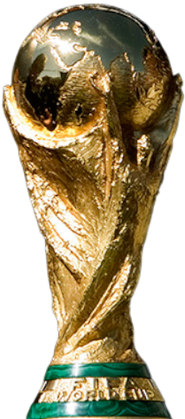
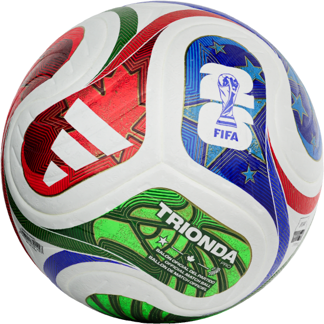

La copa Mundial de la FIFA, también conocida como Copa mundial de Fútbol, Copa del Mundo o simplemente Mundial, es el principal torneo internacional oficial de futbol masculino a nivel de selecciones nacionales del mundo.
Se realiza cada cuatro años desde 1930, cuando se llamaba campeonato Mundial de Futbol, con la excepción de 1942 y 1946,se suspendió por conflictos de la segunda guerra mundial. Cuenta con sod etapas importantes, una clasificacion de 200 selecciones y una fase final. En una sede definida con aterioridad en la que participan 48 equipos a partir del mundial 2026.
Trofeo

Diseño de balones
